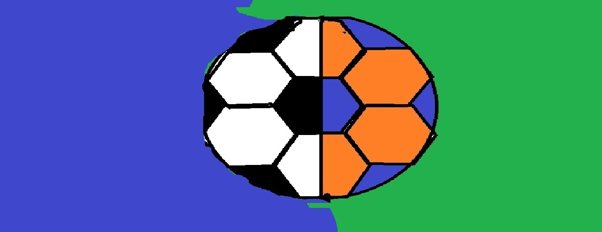

Home
History of FOOTHAND
Foothand is a sport which is created by combining elements
of football and handball. This sport was found in Germany.
But in that years, Germany was seperated as West and East Germany.
However, around 1970s, these two countries had a detente between each other.
So politics and people started to interact more. As a result, people wanted
to make this friendship stronger and with the recognization deal in 1972 between these countries;
people wanted to show this friendship to the world and Europe.
And they decided to do this through a sports event.
The world cup championship of West Germany in 1974 and East Germany's
second place in handball world championship in the same year created an idea
of combining these two sports which are two states of germany became
successful in worldwide competitions of these sports in the same year. And first Foothand match
was played between West and East Germany in 1975. They played 2 matches;
1 in the capital of West Germany Bonn, and the other in the capital of
East Germany East Berlin. And that was the beginning of Foothand as a competitive sport.
Logo
